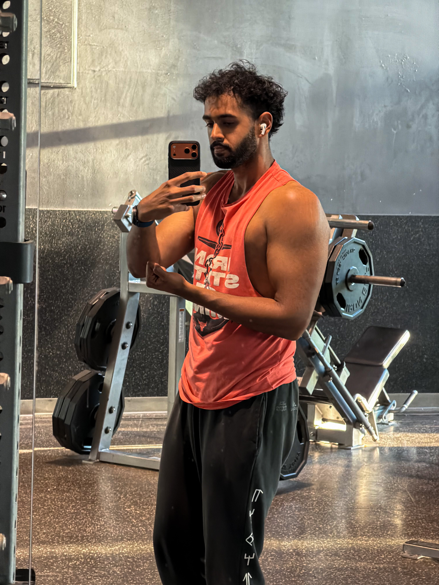

Boston, MA
Avinash Pandey
I build LLM, RAG, and data systems that turn messy information into usable tools.
Incoming M.S. AI student at Northeastern and Purdue CS graduate, with experience across LLM applications, machine learning workflows, and data pipeline development.

About
I build useful AI systems, not just demos
I’m an AI engineer and incoming M.S. in Artificial Intelligence student at Northeastern University. I graduated from Purdue University with a B.S. in Computer Science, where I built a foundation in AI, data systems, databases, and applied Machine Learning.
My work sits at the intersection of LLM systems, information retrieval, summarization, and scalable data pipelines. I’m interested in building practical AI systems that help people search, understand, and act on large amounts of information.
Recently, I worked on a research project that used multiple AI models to help people search, rank, and summarize biomedical research papers more efficiently. The goal was to make dense medical literature easier to navigate by combining relevance ranking and personalized summaries. I’ve also built pipelines for analyzing thousands of ICML papers using vector databases, metadata filtering, and LLM-based summarization.
Featured Research
Helping researchers find better papers faster
Research Assistant · Purdue University
Multi-Model LLM Architectures for Personalized Summarization and Relevance Ranking in Biomedical Literature
This project explores how multiple LLMs can be combined with retrieval, citation-aware ranking, and user-centered evaluation to generate personalized summaries of biomedical literature. The system retrieves papers, enriches metadata using biomedical APIs, ranks results using relevance and citation signals, and generates summaries using multi-model LLM workflows.
Architecture flow
- User Query
- Ontology-Guided Keywords
- PubMed Entrez Retrieval
- NIH iCite Metadata
- Hybrid Ranking
- Multi-LLM Summarization
- Evaluation
- Personalized Summary
LLMs
RAG
Biomedical AI
Information Retrieval
Ranking
Evaluation
Human-in-the-loop AI
Projects
Applied AI and data systems
Experience
Professional Experience
A timeline of applied AI research, data workflows, and technical roles.
February 2025
- February 2026
- February 2026
Research Assistant
Purdue University
- Designed a multi-LLM summarization pipeline using Google Gemini 2.0 Flash and GPT-4o-mini to generate personalized biomedical literature summaries, achieving BERTScore-F1 of 0.86 across 20 biomedical queries.
- Built an asynchronous retrieval and metadata-enrichment workflow using PubMed Entrez and NIH iCite to collect article metadata, citation signals, and relevance features across biomedical literature.
- Developed a citation-aware ranking approach combining ontology-guided keyword extraction, cosine similarity, and Relative Citation Ratio (RCR) to surface high-value papers.
- Ran ranking and retrieval ablations comparing TF-IDF, BM25, ontology-constrained keywording, and hybrid citation-similarity scoring to analyze trade-offs in relevance quality.
- Implemented multi-model aggregation and validation steps to compare generated summaries, reduce unsupported claims, and improve reliability for user-facing literature review workflows.
- Built a Streamlit-based research interface for query input, candidate paper review, ranked result inspection, and summary generation during user evaluation.
- Evaluated the system with ROUGE, BERTScore, ablation studies, and a 10-user study; documented methods and findings in a first-author biomedical AI preprint.
December 2023
- March 2024
- March 2024
Business Analyst Intern
Legislative Services Agency
- Designed and managed ETL pipelines to validate and preprocess Indiana General Assembly datasets, achieving 98% accuracy across legislative bill and report datasets.
- Developed and optimized SQL-based workflows, improving extraction, transformation, and loading efficiency within SQL Server.
- Collaborated with Business Analysts and Software Developers to enhance BI workflows using Tableau and Power BI for data reporting and analysis.
- Provided technical support for data integration issues, ensuring reliable access to structured legislative data sources.
Education
Education
Academic foundation across AI, computer science, data systems, and applied ML.
Master of Science in Artificial Intelligence
Northeastern University
Foundations of Artificial Intelligence
Linear Algebra and Probability for Data Science
Bachelor of Science in Computer Science
Purdue University
GPA: 3.3/4.0
Artificial Intelligence
Data Science
Database Systems
Operating Systems
Linear Algebra
Probability and Statistics
Skills
Skills built across research, coursework, internships, and personal projects
Click a skill to see where I’ve used it across research, projects, and experience
Leadership & Awards
Leadership beyond coursework
Campus leadership, mentoring, and academic recognition from my time at Purdue
Purdue University
Organized hackathons, project nights, and speaker events; increased member engagement through recurring student-led programming.
Purdue University
Mentored incoming international students on academic resources, campus logistics, and cultural adjustment.
Outside Work
Beyond the screen!
Outside of school and work, I’m usually running, lifting, hiking, or exploring a new city. I like having things outside of tech that keep me active, curious, and grounded!
I’m also into soccer, anime, Star Wars, and music, so there’s a decent chance I’m either watching a game, starting a new show, or making a playlist for absolutely no reason haha

Contact
Get In Touch!
Interested in AI/ML, LLM systems, or data pipeline work? Let’s connect!